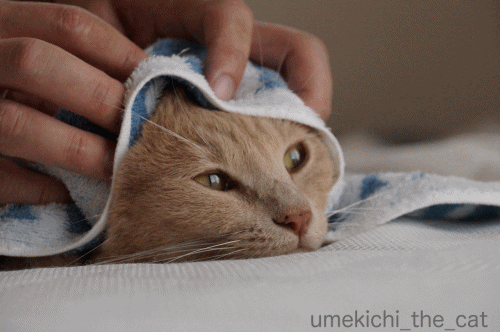
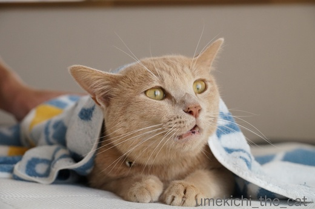
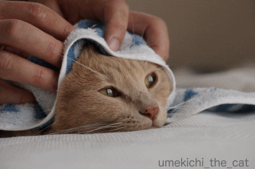
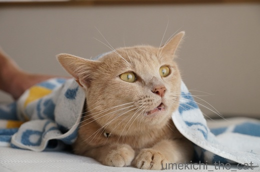

わしゃわしゃも場所次第 [梅吉]
ベッドの上から動こうとしないのでタオルをかけるとまったりしちゃった梅吉さん。

頭から首回りをわしゃわしゃわしゃ・・・・・

気持ち良いのかな？満足そうです＾＾
一方、腰ポンポイントより下のおしっぽの付け根をわしゃわしゃすると

![[猫]](https://blog.ss-blog.jp/_images_e/101.gif) アワアワアワアワー！
アワアワアワアワー！

ギャワワワワワワー！！
と変な声出ちゃいました（^▽^;)
「カフーッ」とため息みたいな声も出るしここは嫌いなポイントなのでしょうか。

わしゃわしゃはくびまわりとこしだけにしてや。
にゃんこのしっぽ周り付近には 馬尾（ばび）という神経の束が集まっていて
ツボに相当する部分な様ですね。
梅吉の場合はしっぽ周りの腰に近い方は気持ちの良いツボ、
付け根付近は「触っちゃいや〜ん」なツボみたいです。
あんな変な声聞いたの初めてだったのでびっくりしたけど笑っちゃいました。
カメラが動画モードじゃなくて残念！
 ↑ガブッと一押し↑
↑ガブッと一押し↑
ようやく「吉祥天立像」にお目にかかることができました。
我が家から京都浄瑠璃寺まではとっても行きにくい。
行きたいなーと思いながら今までぐずぐずしていたら近くの美術館で期間限定で公開。
指の先までお美しい。
後ろ姿までたっぷり堪能して来ました。
吉祥天女がいなくなる前日で夏休みでもあるので混み合っているかな
と思ったのですがお昼ご飯を早めに食べて１２時過ぎに美術館に入ったので
ゆっくりと見て回ることができました＾＾

頭から首回りをわしゃわしゃわしゃ・・・・・

気持ち良いのかな？満足そうです＾＾
一方、腰ポンポイントより下のおしっぽの付け根をわしゃわしゃすると


と変な声出ちゃいました（^▽^;)
「カフーッ」とため息みたいな声も出るしここは嫌いなポイントなのでしょうか。

にゃんこのしっぽ周り付近には 馬尾（ばび）という神経の束が集まっていて
ツボに相当する部分な様ですね。
梅吉の場合はしっぽ周りの腰に近い方は気持ちの良いツボ、
付け根付近は「触っちゃいや〜ん」なツボみたいです。
あんな変な声聞いたの初めてだったのでびっくりしたけど笑っちゃいました。
カメラが動画モードじゃなくて残念！
ようやく「吉祥天立像」にお目にかかることができました。
我が家から京都浄瑠璃寺まではとっても行きにくい。
行きたいなーと思いながら今までぐずぐずしていたら近くの美術館で期間限定で公開。
指の先までお美しい。
後ろ姿までたっぷり堪能して来ました。
吉祥天女がいなくなる前日で夏休みでもあるので混み合っているかな
と思ったのですがお昼ご飯を早めに食べて１２時過ぎに美術館に入ったので
ゆっくりと見て回ることができました＾＾

カフェオレ色の梅吉

梅吉 2023年8月10日 永眠


梅吉と出会った譲渡会

犬猫の理由なき殺処分ゼロ
妄想広告
UMEKICHI 光

爆発的に早い！
時々攻撃的！
Thanks to Mr.Boss365
爆発的に早い！
時々攻撃的！
Thanks to Mr.Boss365

梅吉君の表情からどんな声だったのか想像するよー(笑)
うみも、よく相方君におしっぽの付け根をわしゃわしゃされてます。
絶叫してますよ^^;
吉祥天立像、じっくり見られたのですね！良かったです〜〜^^
ほんっと指の先まですべてが美しいですよね♪♪
by リュカ (2017-08-05 15:41)
頭わしゃわしゃにはくつろいでいるのに、尻尾に移るとはっ! としたお顔。でもホントに嫌だったら逃げちゃいますよね。
by zombiekong (2017-08-05 15:49)
梅吉さん、気持ちよさそうに見えますが。
「もう一回やって」と言っている風にも見えます。
ちがうのかなー(^^♪
by riverwalk (2017-08-05 17:13)
まったりモードの梅吉さん、幸せな顔をしていますね。
しっぽの付け根をわしゃわしゃされた時の、前足さんに力が入っているような。
梅吉さんの気持ちにマイクを向けてください（笑）
by kiki (2017-08-05 17:18)
梅吉さんのまったり顔♪
ワシャワシャされて気持ち良さそうですが
気に入らない場所もあるのですね(;^_^A
ハッとしたお顔もたまらなく可愛いです♪
by きぃ (2017-08-05 18:28)
梅吉さん
ワシャワシャされて一呼吸ですね(^^)
by ma2ma2 (2017-08-05 18:33)
このポーズが何とも言えないかわいさですね！
by みぃにゃん (2017-08-05 19:18)
もお～、かわいい・・梅吉さん触りたい～。
by うっかりくま (2017-08-05 19:50)
梅吉くん、首周りわしゃわしゃは気持ちよさそう～♪
尻尾の付け根は未知の感覚？！
ほんとに嫌だったらフーッとするか、逃げますよねー。
うちの猫たちも尻尾の付け根まで来ると「何するだっ」って怒られること多かったかな。腰までだったら、好きな子もいるんですよね＾＾
吉祥天女さま、お美しい‥＾＾
by sana (2017-08-05 20:00)
タオルをかけて猫もみん、気持ちよさそうですね。^^)
うちのも、しっぽの付け根をマッサージすると
怒ったような声を出しますが、
嫌がっている雰囲気ではありません。
by yes_hama (2017-08-05 21:00)
わしゃわしゃ、気持ちよさそうですね(*^▽^*)
触って気持ちのいい場所、猫さんによって微妙に違うようで・・・。
おちりトントンは喜ぶと大抵の本に書いてあるのでやってみますが、スグ噛まれます(-_-メ)
逆に尻尾掴んだり股間チョップしてもあまり気にしません。
梅吉さんアワアワのお顔が見たくて、何度でもやっちゃいそうです^^;
by ゆきち (2017-08-05 21:14)
頭わしゃわしゃはうちの子達も喜んでるみたいです。
ついでに耳を指で挟んで擦っても気持ち良さそう＾＾
by ぽちの輔 (2017-08-06 06:45)
尻尾の付け根ポイントは、うちの猫も同じ反応してましたよ(^_^)
変な反応するのですが、またやってと言わんばかりにすり寄ってきてました。
by kou (2017-08-06 07:13)
反応が正直なおのこって、本当にきゃわいいね♪
ちぃさんこそ実写吉祥天ですよ(*´ｪ`*)
by Ginger (2017-08-06 15:03)
梅吉さん、わしゃわしゃマッサージ気持ちよさそうですねぇ♪( ´▽｀)
同じ尻尾付近でも気持ち良い場所と「やめて〜」って場所があるとは(°_°)
うちのニャンズ、かみさんにされることは何でも気持ちよさそうだから
かみさんは参考にならないってことだな(*_*)
by ニッキー (2017-08-06 22:21)
梅吉君にとって、気持ちのいいポイントなんでしょうね。
すっかりリラックスした表情が、可愛いです。
by うめむす (2017-08-06 23:31)
ニャンコの、わしゃわしゃポイントは、違うのかもしれませんね～。
我が家は、お尻ポンポン＆わしゃわしゃは、どちらも好きだけど、
ソフィーのが、うっふん♡度は、マシマシです（笑）
梅吉さんの、ちょっぴりお口が開いてるお顔、たまりませんねぇ(^^♪
そうそう、夏の美術展は、涼しくって良いですよね～。
吉祥天立像さんの、お衣装が凝ってらっしゃる！
by morichan (2017-08-07 11:23)
わしゃわしゃされてる梅吉くん、可愛いね♪
幸せなお顔してる(^-^)
しっぽの付け根は「アワアワアワアワー！」なの？
後ろで寝てるくるみにやってみたら・・・
普通にゴロゴロ言っています。優しく触り過ぎたのかな？
後で元気に遊んでるときにもうちょっとわしゃわしゃやってみよう！
by emi (2017-08-07 11:52)
声は出すけど襲いかかってこないのですね。もしかしてホントは気持ちよかったとか？(*^_^*)
by palpal (2017-08-07 14:49)
リュカさん＞梅吉もおっとにわしゃわしゃされて変な声出してました^^;
私が触っても、触り方が違うのか鳴かないんですよねー。
力加減の違いかしら・・・・・
念願の「吉祥天立像」美しかったー。
こういう像は本来置いてあるところが良いと聞きますが
彼女に限っては展覧会の会場でスポットを浴びているのがお似合いかな？
と思っちゃいました。
収められている厨子も気になるんだけどねー。
zombiekongさん＞わしゃわしゃしていたのはおっとなのですが
触っているおっとを振り返って「ぎゃわわわわー」と文句。
でも逃げる様子はなし。
「痛気持ちいいー」と思っていたのかな(*>艸<)
riverwalkさん＞逃げなかったので実はそうだったのかもしれません！
「痛いけど気持ち良いー、気持ち良いけどイヤー」ってね(*>艸<)
kikiさん＞頭と首回りわしゃわしゃはストレートに気持ちが良さそうですが
しっぽ付け根は
「痛いけど気持ち良いー、気持ち良いけどイヤー」梅吉談、となりましたww
きぃさん＞しっぽの付け根はどこも気持ちが良いのだろうと思っていたので
「あわあわあわ、ぎゃわわわわ〜」なんて鳴かれてびっくりしました^^;
「あわあわ」の顔も可愛かったのでまた触っちゃおうかな〜なんて(*>艸<)
ma2ma2さん＞おなじわしゃわしゃでもリラックス一転
変な鳴き声でびっくりしましたよ＾＾
みぃにゃんさん＞ふふ(≧▽≦)
変な鳴き声とともにかわいいポーズも見れちゃいました＾＾
うっかりくまさん＞じゃあ、タオル越し首回りわしゃわしゃをお願いします！
あ、「あわあわあわー」のしっぽの付け根の方が良いかしら・・・・・(*>艸<)
sanaさん＞そうそう！しっぽの付け根はまさしく未知の感覚だったのでしょうね。
「なんや〜このきもちはーーーーー！！」みたいな＾＾
吉祥天立像様、神だけに本当に神々しいお方でした。ありがたやー。
yes_hamaさん＞あはは「猫もみん」ですね＾＾
タオル越しにもみもみされているのが
自分が整体に行っている姿と重なって笑っちゃいましたーww
アズ氏もおしっぽの付け根に反応されるのですね！
ゆきちさん＞しっぽ本体を触られるのを嫌がるにゃんこが多い様ですが
梅吉も尻尾掴んでも問題なし。
寝相の悪い私の下敷きになってもぜ〜んぜん平気。
股間チョップもノーリアクションです^^;
しっぽの付け根は触って妙な反応を見せる唯一のところな様で・・・
ズバリ！面白い！！この写真以降も何度か触っちゃいました^^;^^;
ぽちの輔さん＞お耳を擦るのは梅吉も私も大好きですよー。
あのペラペラの手触りがたまらない・・・・(*>艸<)
kouさん＞そうかーwやっぱり変な反応が返ってくるのですねww
梅吉も逃げなかったから嫌ではない様ですね＾＾
Gingerさん＞素直すぎる反応でしたよーww笑っちゃいました(*>艸<)
おお、吉祥天・・・
重力や加齢と戦わなければならない現し身ですのでなんとも(^▽^;)
ただ〜し、あのような「凛」とした美しさ、近づくことはないにしても
目標にし続けることは大切かなと思っていますわ(๑˃̵ᴗ˂̵)و
ニッキーさん＞ゴッドマザー様の手にかかると全てが気持ちも良いツボ！？
ゴッドハンドをお持ちでもあるのですね(^_－)☆
私もいつかその領域にたどり着けるのでしょうか・・・・・
うめむすさん＞梅吉は触られるのは大好きなので割とどこを触っても
ゴロゴロ言っちゃうのですよー。
結構扱いやすい子で〜すww
morichanさん＞ソフィーさんのうっふん♡度wwwww
梅吉のお口の空いている顔はセクシー路線ということでお願いします(≧▽≦)
人が少なかった美術館、涼しくゆっくりと鑑賞できました。
吉祥天立像は本当にお美してく・・・
後ろ姿も美しくて、腰からお尻にかけてのラインが色っぽかったで〜す！！
emiさん＞おしっぽの付け根はおっとがわしゃわしゃしてたのですが
私がやっても鳴かないのー。
力加減が違うのかな？今度グイグイやって見ましょうか！二人ともできるかな(^▽^;)
palpalさん＞結構すごい声で鳴くんだけど怒ってはいない様な・・・
「痛きもち良い！！」だったのかもね(^_－)☆
by ちぃ (2017-08-07 18:04)